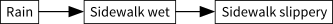
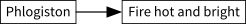

❦
Phlogiston was the eighteenth century’s answer to the Elemental Fire of the Greek alchemists. Ignite wood, and let it burn. What is the orangey-bright “fire” stuff? Why does the wood transform into ash? To both questions, the eighteenth-century chemists answered, “phlogiston.”
… and that was it, you see, that was their answer: “Phlogiston.”
Phlogiston escaped from burning substances as visible fire. As the phlogiston escaped, the burning substances lost phlogiston and so became ash, the “true material.” Flames in enclosed containers went out because the air became saturated with phlogiston, and so could not hold any more. Charcoal left little residue upon burning because it was nearly pure phlogiston.
Of course, one didn’t use phlogiston theory to predict the outcome of a chemical transformation. You looked at the result first, then you used phlogiston theory to explain it. It’s not that phlogiston theorists predicted a flame would extinguish in a closed container; rather they lit a flame in a container, watched it go out, and then said, “The air must have become saturated with phlogiston.” You couldn’t even use phlogiston theory to say what you ought not to see; it could explain everything.
This was an earlier age of science. For a long time, no one realized there was a problem. Fake explanations don’t feel fake. That’s what makes them dangerous.
Modern research suggests that humans think about cause and effect using something like the directed acyclic graphs (DAGs) of Bayes nets. Because it rained, the sidewalk is wet; because the sidewalk is wet, it is slippery:

From this we can infer—or, in a Bayes net, rigorously calculate in probabilities— that when the sidewalk is slippery, it probably rained; but if we already know that the sidewalk is wet, learning that the sidewalk is slippery tells us nothing more about whether it rained.
Why is fire hot and bright when it burns?

It feels like an explanation. It’s represented using the same cognitive data format. But the human mind does not automatically detect when a cause has an unconstraining arrow to its effect. Worse, thanks to hindsight bias, it may feel like the cause constrains the effect, when it was merely fitted to the effect.
Interestingly, our modern understanding of probabilistic reasoning about causality can describe precisely what the phlogiston theorists were doing wrong. One of the primary inspirations for Bayesian networks was noticing the problem of double-counting evidence if inference resonates between an effect and a cause. For example, let’s say that I get a bit of unreliable information that the sidewalk is wet. This should make me think it’s more likely to be raining. But, if it’s more likely to be raining, doesn’t that make it more likely that the sidewalk is wet? And wouldn’t that make it more likely that the sidewalk is slippery? But if the sidewalk is slippery, it’s probably wet; and then I should again raise my probability that it’s raining…
Judea Pearl uses the metaphor of an algorithm for counting soldiers in a line.1 Suppose you’re in the line, and you see two soldiers next to you, one in front and one in back. That’s three soldiers, including you. So you ask the soldier behind you, “How many soldiers do you see?” They look around and say, “Three.” So that’s a total of six soldiers. This, obviously, is not how to do it.
A smarter way is to ask the soldier in front of you, “How many soldiers forward of you?” and the soldier in back, “How many soldiers backward of you?” The question “How many soldiers forward?” can be passed on as a message without confusion. If I’m at the front of the line, I pass the message “1 soldier forward,” for myself. The person directly in back of me gets the message “1 soldier forward,” and passes on the message “2 soldiers forward” to the soldier behind them. At the same time, each soldier is also getting the message “N soldiers backward” from the soldier behind them, and passing it on as “N + 1 soldiers backward” to the soldier in front of them. How many soldiers in total? Add the two numbers you receive, plus one for yourself: that is the total number of soldiers in line.
The key idea is that every soldier must separately track the two messages, the forward-message and backward-message, and add them together only at the end. You never add any soldiers from the backward-message you receive to the forward-message you pass back. Indeed, the total number of soldiers is never passed as a message—no one ever says it aloud.
An analogous principle operates in rigorous probabilistic reasoning about causality. If you learn something about whether it’s raining, from some source other than observing the sidewalk to be wet, this will send a forward-message from Rain to Sidewalk wet and raise our expectation of the sidewalk being wet. If you observe the sidewalk to be wet, this sends a backward-message to our belief that it is raining, and this message propagates from Rain to all neighboring nodes except the Sidewalk wet node. We count each piece of evidence exactly once; no update message ever “bounces” back and forth. The exact algorithm may be found in Judea Pearl’s classic Probabilistic Reasoning in Intelligent Systems: Networks of Plausible Inference.
So what went wrong in phlogiston theory? When we observe that fire is hot, the Fire node can send a backward-evidence to the Phlogiston node, leading us to update our beliefs about phlogiston. But if so, we can’t count this as a successful forward-prediction of phlogiston theory. The message should go in only one direction, and not bounce back.
Alas, human beings do not use a rigorous algorithm for updating belief networks. We learn about parent nodes from observing children, and predict child nodes from beliefs about parents. But we don’t keep rigorously separate books for the backward-message and forward-message. We just remember that phlogiston is hot, which causes fire to be hot. So it seems like phlogiston theory predicts the hotness of fire. Or, worse, it just feels like phlogiston makes the fire hot.
Until you notice that no advance predictions are being made, the non-constraining causal node is not labeled “fake.” It’s represented the same way as any other node in your belief network. It feels like a fact, like all the other facts you know: Phlogiston makes the fire hot.
A properly designed AI would notice the problem instantly. This wouldn’t even require special-purpose code, just correct bookkeeping of the belief network. (Sadly, we humans can’t rewrite our own code, the way a properly designed AI could.)
Speaking of “hindsight bias” is just the nontechnical way of saying that humans do not rigorously separate forward and backward messages, allowing forward messages to be contaminated by backward ones.
Those who long ago went down the path of phlogiston were not trying to be fools. No scientist deliberately wants to get stuck in a blind alley. Are there any fake explanations in your mind? If there are, I guarantee they’re not labeled “fake explanation,” so polling your thoughts for the “fake” keyword will not turn them up.
Thanks to hindsight bias, it’s also not enough to check how well your theory “predicts” facts you already know. You’ve got to predict for tomorrow, not yesterday. It’s the only way a messy human mind can be guaranteed of sending a pure forward message.
Judea Pearl, Probabilistic Reasoning in Intelligent Systems: Networks of Plausible Inference (San Mateo, CA: Morgan Kaufmann, 1988). ↩